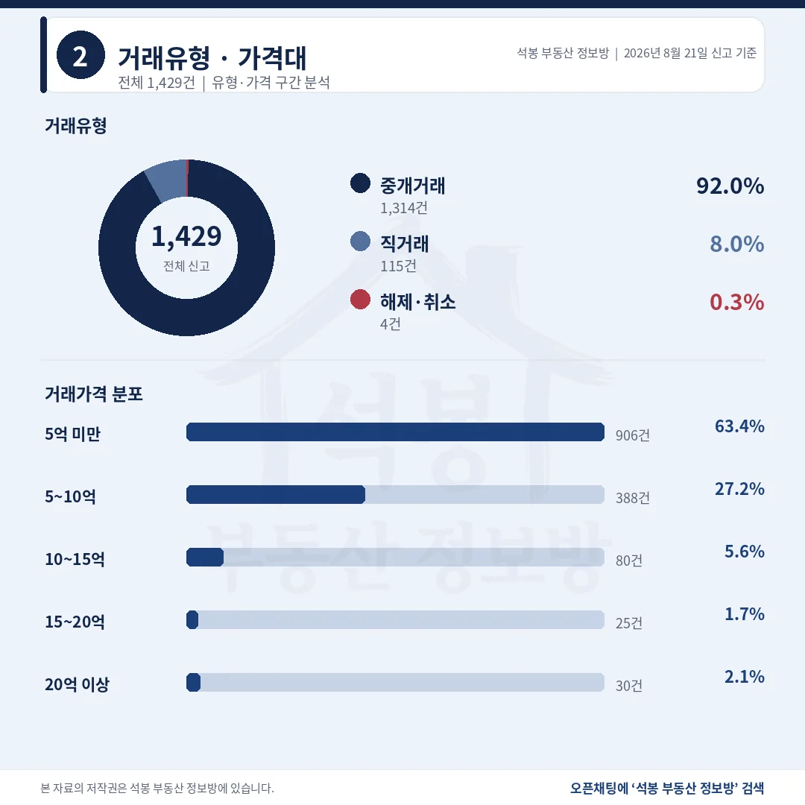
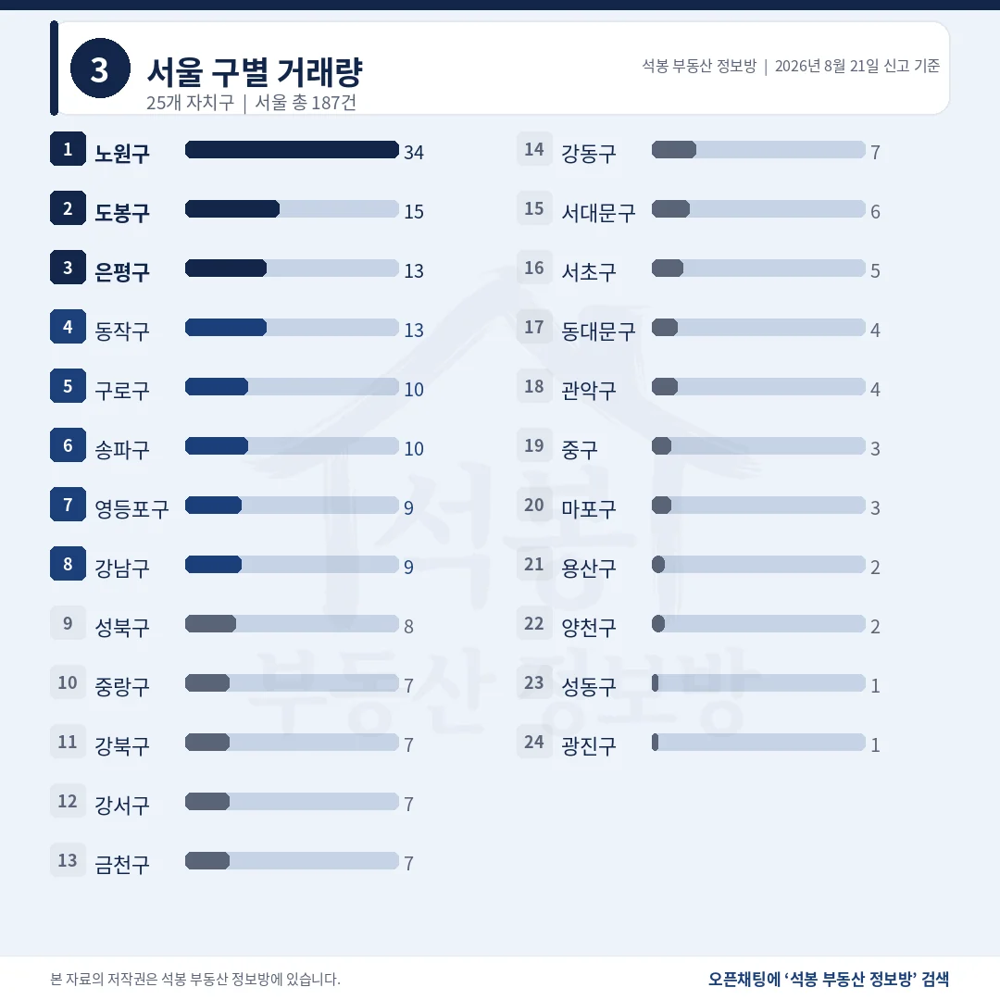
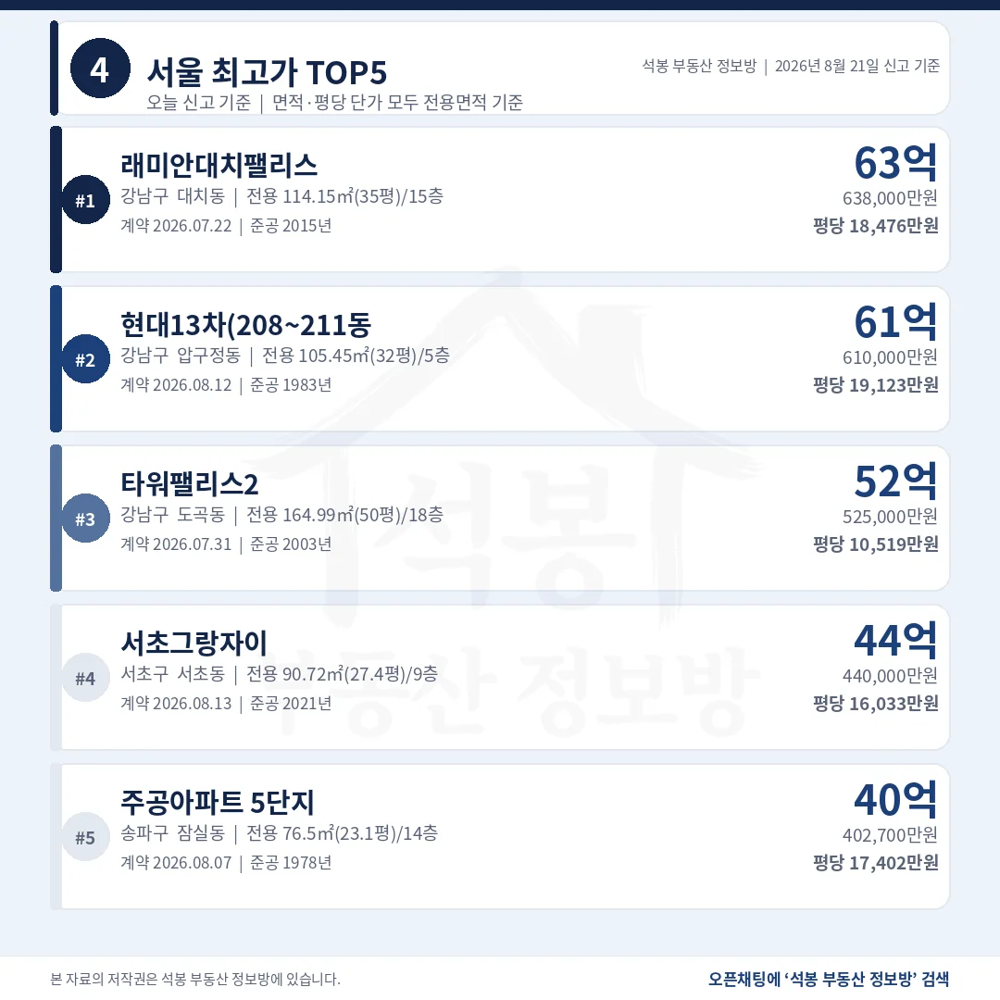
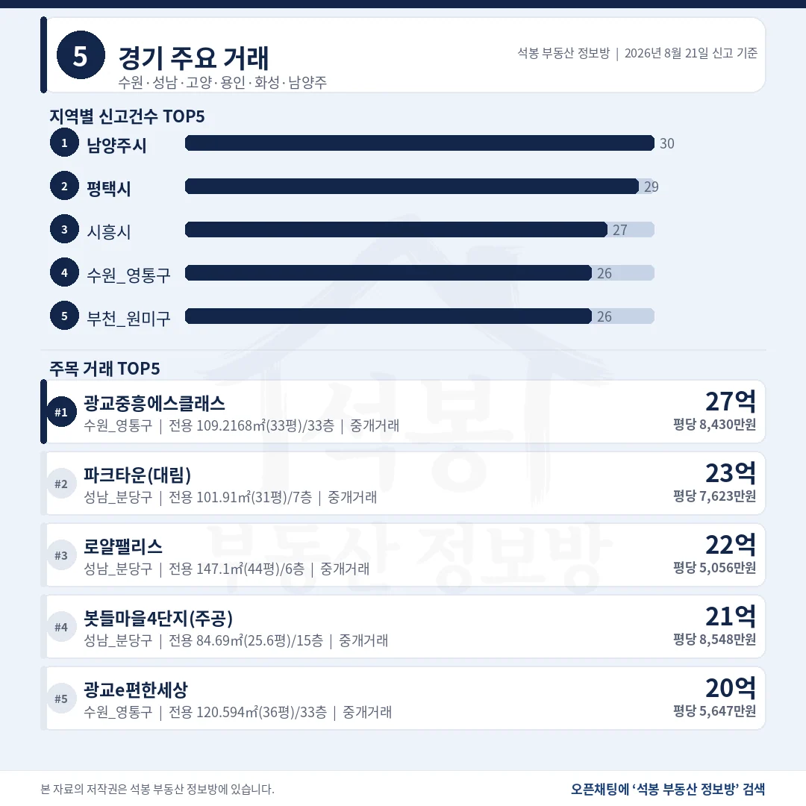
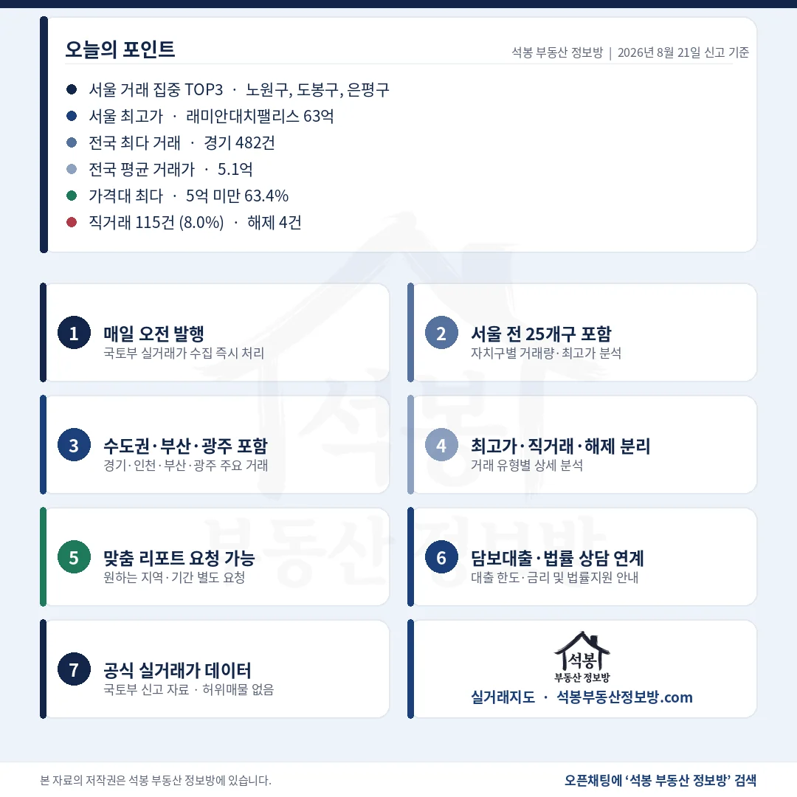

단지명을 누르면 그 단지의 실거래 내역과 시세를 바로 볼 수 있습니다. (면적과 평당 단가는 모두 전용면적 기준)
5억 미만 63.4%, 직거래는 115건 8.0%

거래유형·가격대
열 건 중 여섯 건이 5억 아래에서 이뤄졌고, 10억을 넘긴 거래는 135건으로 9.4%였습니다.
거래유형
건수
비중
참고
중개거래
1,314건
92.0%
공인중개사 경유
직거래
115건
8.0%
최다 단지 6건
해제·취소
4건
0.3%
중위 계산에서 제외
직거래 115건에 한 단지 쏠림은 없었습니다. 가장 많은 곳이 6건입니다.
가격대
건수
비중
누적 비중
5억 미만
906건
63.4%
63.4%
5~10억
388건
27.2%
90.6%
10~15억
80건
5.6%
96.2%
15~20억
25건
1.7%
97.9%
20억 이상
30건
2.1%
100.0%
건수와 비중은 해제·취소를 포함한 전체 신고 기준입니다.
여기서부터는 회원에게 보여드립니다
카카오 로그인 3초면 전문을 읽을 수 있습니다. 무료입니다.
가입하시면 지역 시장조사 보고서(약식)를 2회 무료로 요청하실 수 있습니다.
이미 회원이면 같은 버튼으로 로그인만 됩니다
경기 482건에 서울 187건, 수도권이 51.2%

서울 구별 거래량
경기 한 곳이 전국의 3분의 1을 차지했고, 수도권 셋을 합치면 732건으로 절반을 갓 넘겼습니다.
시도
건수
비중
중위 거래가
중위 평당가(전용)
경기
482건
33.7%
5.1억
2,192만원
서울
187건
13.1%
8.2억
4,175만원
부산
90건
6.3%
2.8억
1,368만원
경남
87건
6.1%
2.4억
999만원
전북
80건
5.6%
1.7억
891만원
인천
63건
4.4%
3.5억
1,790만원
경북
59건
4.1%
1.8억
749만원
전남
59건
4.1%
2.0억
844만원
중위값은 해제 4건을 뺀 1,425건으로 계산했습니다.
서울 자치구
건수
중위 거래가
비고
노원구
34건
6.1억
한 단지 쏠림 없음
도봉구
15건
5.7억
해당 없음
은평구
13건
9.4억
해당 없음
동작구
13건
15.0억
20억 이상 2건
구로구
10건
7.0억
해당 없음
송파구
10건
26.8억
20억 이상 9건
영등포구
9건
15.0억
20억 이상 2건
강남구
9건
21.8억
20억 이상 5건
송파구는 10건 중 9건이 20억을 넘겼습니다. 건수는 적은데 중위가 26.8억으로 서울에서 가장 높은 이유입니다.
서울 최고가 래미안대치팰리스 63.8억, 위 세 건이 모두 강남구

서울 최고가 TOP5
총액 1위는 대치동이지만 평당으로 보면 압구정동 현대13차가 19,123만원으로 앞섭니다.
#
단지
구·동
거래가
전용면적
평당(전용)
1
래미안 대치팰리스
강남구 대치동
63.8억
114.15㎡ (35평)
18,476만원
2
현대13차 (208~211동)
강남구 압구정동
61.0억
105.45㎡ (32평)
19,123만원
3
타워팰리스2
강남구 도곡동
52.5억
164.99㎡ (50평)
10,519만원
4
서초그랑자이
서초구 서초동
44.0억
90.72㎡ (27.4평)
16,033만원
5
주공아파트 5단지
송파구 잠실동
40.27억
76.5㎡ (23.1평)
17,402만원
4위 서초그랑자이는 2021년 준공으로 이 표에서 가장 새 단지입니다. 나머지 넷은 준공 1978년부터 2015년까지 걸쳐 있습니다.
비수도권 최고가는 대구 범어동 19.2억

지역별 최고가
비수도권 1,214건 중 가장 비싼 거래가 19.2억입니다. 20억 문턱을 넘은 곳이 없었습니다.
#
단지
지역
거래가
전용면적
평당(전용)
1
두산위브더 제니스
대구 수성구 범어동
19.2억
137.06㎡ (41평)
4,631만원
2
해운대두산위브 더제니스
부산 해운대구 우동
15.8억
111.07㎡ (34평)
4,703만원
3
해운대두산위브 더제니스
부산 해운대구 우동
15.3억
118.38㎡ (36평)
4,273만원
4
빌리브범어
대구 수성구 범어동
13.75억
84.99㎡ (25.7평)
5,348만원
5
빌리브범어
대구 수성구 범어동
12.3억
84.97㎡ (25.7평)
4,785만원
다섯 건 중 넷이 대구 수성구 범어동과 부산 해운대구 우동입니다. 두산위브더제니스는 이날 신고분에 매매 3건이 함께 들어왔습니다.
20억 이상 30건, 서울 25건에 경기 5건

요약 포인트
서울 25건은 일곱 개 구에서 나왔고, 경기 5건은 광교와 분당 두 곳에만 있었습니다.
지역
건수
비중
세부
서울 송파구
9건
30.0%
잠실동 중심
서울 강남구
5건
16.7%
대치·압구정·도곡
서울 마포구
3건
10.0%
해당 없음
서울 서초구
3건
10.0%
해당 없음
서울 그 밖 3개구
5건
16.7%
영등포·동작·용산
경기 성남 분당구
3건
10.0%
삼평·수내·정자동
경기 수원 영통구
2건
6.7%
광교 이의·원천동
비수도권
0건
0.0%
최고 19.2억
비중은 20억 이상 30건을 분모로 계산했습니다.
8월 20일 원고에서 짚어 드렸던 것처럼 그날은 20억대 27건 가운데 대전 둔산동 한 건이 비수도권 몫이었습니다. 8월 21일에는 그 한 자리마저 비었습니다. 비수도권 최고가가 19.2억에서 멈췄으니 아슬아슬하게 못 넘긴 셈인데, 하루 자료로 추세를 말하기는 이릅니다. 다만 고가 구간이 서울 일곱 개 구와 경기 두 곳으로 좁혀진 모양은 며칠째 비슷하게 반복되고 있습니다.
경기 5건의 위치도 눈여겨볼 만합니다. 광교와 분당, 둘 다 판교와 함께 경기 남부 고가 축을 이루는 곳입니다. 경기 전체 중위가 5.1억인데 이 두 곳에서만 20억 이상이 나왔으니, 같은 경기라도 안쪽 격차가 상당합니다. 서울 자치구 표에서 노원구 중위 6.1억과 송파구 26.8억이 나란히 놓인 것과 같은 구조입니다.
표 보는 법 · 직거래는 중개사를 끼지 않고 당사자끼리 한 거래입니다. 면적과 평당 단가는 모두 전용면적 기준이고, 평은 ㎡를 3.3058로 나눈 값입니다. 중위 거래가는 그 지역 거래를 금액순으로 줄 세웠을 때 한가운데 값이라 평균보다 체감에 가깝습니다. 건수와 비중은 해제·취소를 포함한 전체 신고 기준이고, 중위와 평균은 해제 4건을 빼고 계산했습니다.
원자료: 국토교통부 실거래가 공개시스템 (2026년 8월 21일 신고분 기준) · 편집·제작: 석봉 부동산 정보방 · 신고분은 계약일과 신고일이 다를 수 있으며 해제·취소 건이 뒤늦게 반영될 수 있습니다 · 본 자료는 정보 제공 목적이며 투자 권유가 아닙니다.